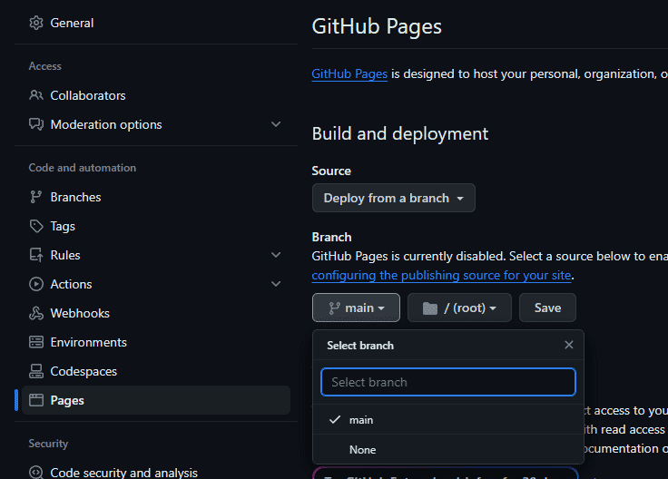

Vad är det?
Card Randomizer Utility for Midgar Madness (CRUMM) är ett webbaserat verktyg skapat för actionäventyrsfrågespelet Midgar Madness. CRUMM används för att läsa in och slumpmässigt välja ut allmänbildande frågor med tillhörande svarsalternativ.
CRUMM finns här: najls.github.io/crumm/
Hur fungerar det?
CRUMM används med fördel på mobilen då tillgång till kamera är en förutsättning. Kameran används för att läsa QR-koder som innehåller URL:er till filer med samlingar av frågor och svarsalternativ. När en QR-kod läses slumpar CRUMM fram en av frågorna och visar upp den som ett kort tillsammans med svarsalternativen. CRUMM håller reda på vilka frågor som visats och kan hantera flera filer parallellt.
Minne
CRUMM använder browserns local storage för att minnas vilka frågor som har visats. För att tömma local storage och börja på en ny slumpad omgång, ange query-parametern clear.
Såhär: najls.github.io/crumm/?clear
Gör egna frågor!
Att hitta på egna frågor är roligt och att skapa en fil för dessa är inte svårt! Det enda du behöver är en texteditor av något slag. Typ vad som helst funkar, men t.ex. Visual Studio Code kommer göra upplevelsen angenämare.
Skriva frågefiler
Frågefilerna skrivs på formatet JSON, som du kan läsa allt om på json.org, men för att spara tid kan du kopiera mallen nedan och skriva direkt i den.
{
"title": "",
"questions":
[
{
"text": "",
"alternatives":
[
{ "text": "" },
{ "text": "" },
{ "text": "" }
],
"answer": 0
},
{
"text": "",
"alternatives":
[
{ "text": "" },
{ "text": "" },
{ "text": "" }
],
"answer": 0
},
{
"text": "",
"alternatives":
[
{ "text": "" },
{ "text": "" },
{ "text": "" }
],
"answer": 0
}
]
}
I JSON förekommer två typer av struktur: objekt och listor. Ett objekt omges av { } medan en lista omges av [ ]. I mallen syns en massa "". Dessa är tomma textsträngar och det är, inte helt oväntat, mellan citationstecknen som text fylls i. Textsträngarna "title", "questions", "alternatives" och "answer" fungerar som nycklar och får inte ändras.
Förhoppningsvis är strukturen relativt självförklarande. Det finns inget (teoretiskt) minimum eller maximum varken för antalet frågor eller antalet svarsalternativ per fråga. För att skapa nya frågor är det enklast att bara kopiera objekt i questions-listan. Motsvarande gäller för svarsalternativen i listorna alternatives.
Värdena answer ska vara siffervärden och är i mallen satta till 0, men ska förstås motsvara det rätta svarsalternativet, dvs. minst 1. Värdet title som ligger överst är valfritt, men om ett sådant finns kommer CRUMM att visa upp det som en rubrik på frågekortet, vilket är användbart om frågorna hör till en namngiven kategori.
Frågefilerna sparas med filändelsen .json
Några saker att tänka på
- Det går inte att använda
"i textsträngarna då detta i JSON kommer att tolkas som att strängvärdet är avslutat, vilket leder till syntaxfel. Behöver du citationstecken i dina frågor eller svarsalternativ, använd'eller“och” - Var noga med att separera fråge- och svarsobjekten med komma. Om ett kommatecken saknas eller förekommer på fel plats (t.ex. efter det sista objektet i en lista) kommer syntaxfel att uppstå.
- Om du är osäker på din syntax kan du enkelt kolla att den stämmer med en JSON-validator, t.ex. på jsonlint.com. I regel kommer dock din texteditor att hjälpa till med detta.
- Ha kul!
Hosta frågefiler
För att CRUMM ska kunna läsa frågefilerna behöver dom vara tillgängliga på internet via en URL. Om du som många andra inte har en egen webbserver hemma måste du använda dig av någon typ av tjänst. För just det här ändamålet rekommenderas GitHub Pages. Det är relativt enkelt att komma igång med och kostar ingenting!
Sätta upp ett repo för GitHub Pages
Skapa ett konto på github.com. Därefter skapar du ett repository (repo) som du döper till något rimligt. Det viktiga här är att du väljer att göra ditt repo publikt tillgängligt.
När du klickat på Create repository hamnar du på startsidan för ditt nya repo. Om du har noll Git-vana så väljer du att ladda upp en existerande fil i den blå rutan som heter Quick setup. Länken finns i den lilla texten på nedersta raden i rutan. Om du inte ser Quick setup borde du istället se en meny som heter Add file till höger i överkant.
Filuppladdningen är hyfsat självförklarande. Du kan välja en eller flera filer och när du är nöjd klickar du på Commit changes.
När du har dina frågefiler på plats är det dags att aktivera GitHub Pages för ditt repo. Gå till Settings och välj Pages i sidomenyn. Under Branch väljer du main och klickar sedan på Save.
Klart! Efter någon minut eller två kan du se din fil på adressen dittanvändarnamn.github.io/reponamn/filnamn.json
Skapa QR-kod för frågefiler
Frågefiler görs som tidigare nämnt tillgängliga via QR-koder. För att göra det enkelt att läsa av koderna är det bäst om dom finns utskrivna på någon typ av kort
För att skapa själva koden från din URL finns det en massa webbaserade verktyg, t.ex. på qrcode-monkey.com. Spara ner bildfilen och skriv ut!